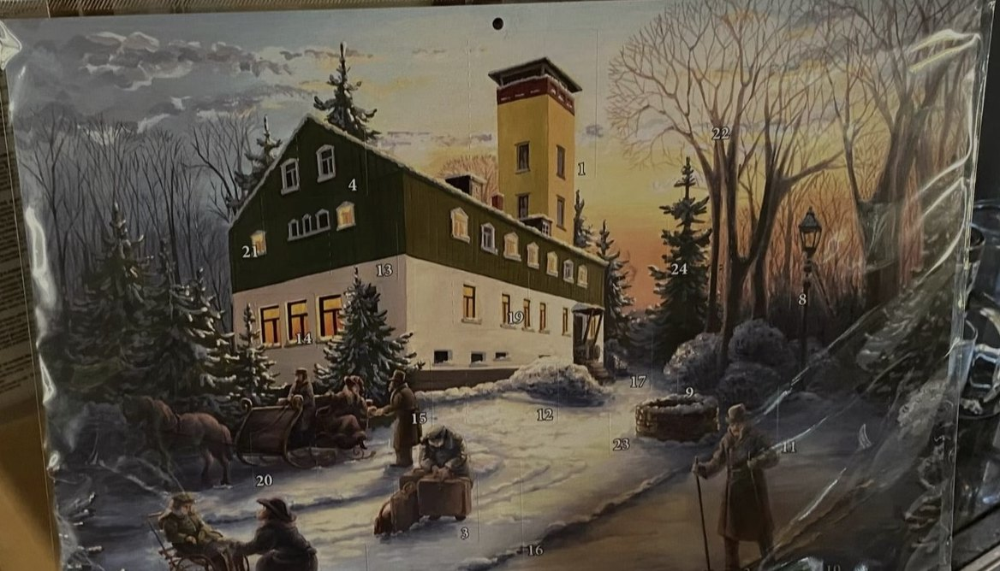

Prinz-Friedrich-August-Baude · Sohland an der Spree
Zeit der Wunder
Der „Lies mich!“-Adventskalender

Herzlich willkommen!
Schön, dass du den exklusiven „Lies mich!“-Adventskalender der Prinzenbaude Sohland in den Händen hältst und ausprobierst, was es damit auf sich hat!
Ab 1. Dezember wird jedes geöffnete Fensterchen ein Stück des Adventskalendermotivs verändern – und dich täglich aufs Neue überraschen. Aber damit nicht genug: Zusätzlich kannst du jeden Tag online ein Kapitel der Kurzgeschichte „Zeit der Wunder“ der Autorin Daniela Tetzlaff lesen.
„Zeit der Wunder“ erzählt eine atmosphärische Geschichte über einen längst vergangenen Winter auf der Prinzenbaude und den Troll, der dort im Brunnen der Baude lebt. Mit einem kleinen Wunder pro Tag verkürzt der Troll dir die Wartezeit bis zum Weihnachtsfest.
Dazu haben wir auf den Innenseiten der Kalendertürchen QR-Codes angebracht, die du mit deinem Smartphone oder Tablet scannen kannst. Sie führen dich jeden Tag zum richtigen Kapitel auf unserer Webseite. Probier es einfach aus!
Wir freuen uns darauf, dir die Vorweihnachtszeit mit diesem einzigartigen Adventskalender zu verschönern und wünschen dir eine gute Zeit! Bis bald einmal wieder auf der Prinzenbaude in Sohland!
Dieser Adventskalender entstand in Zusammenarbeit mit der Pappnoptikum GmbH aus Leipzig.